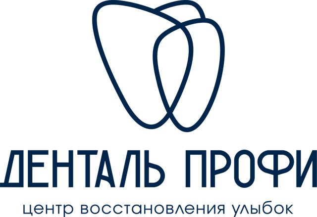
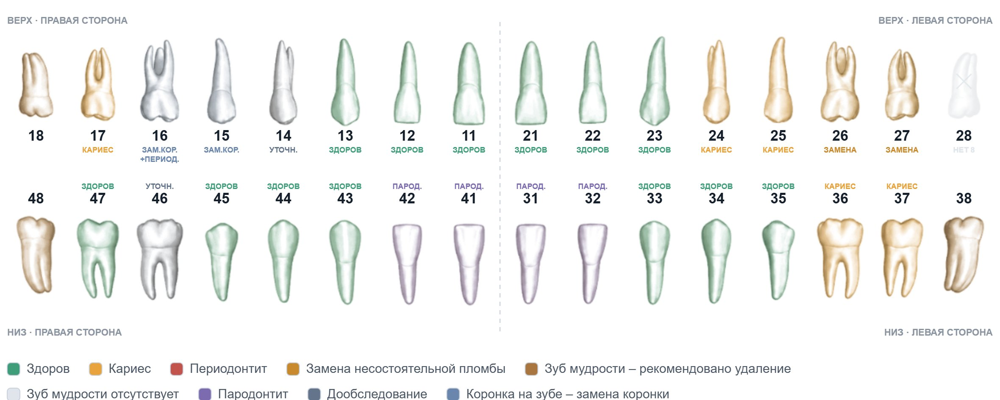
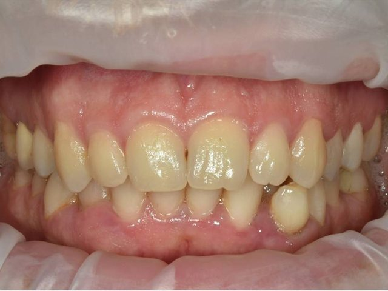
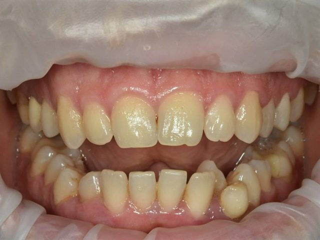
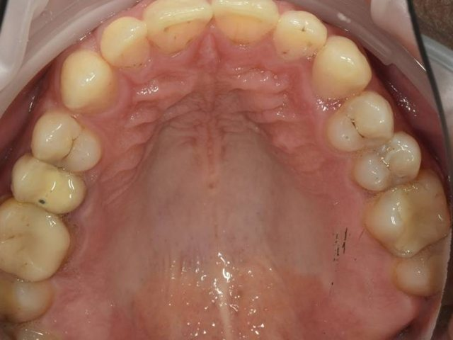
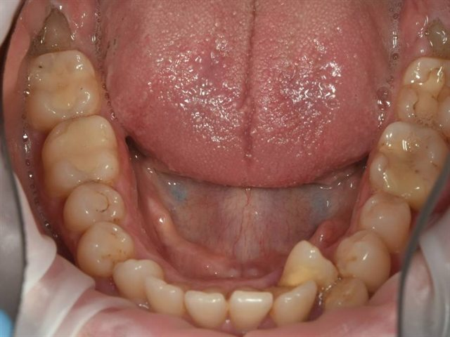
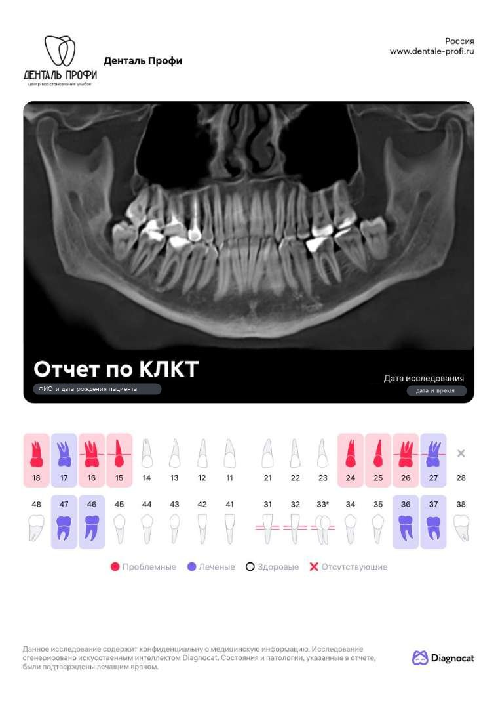
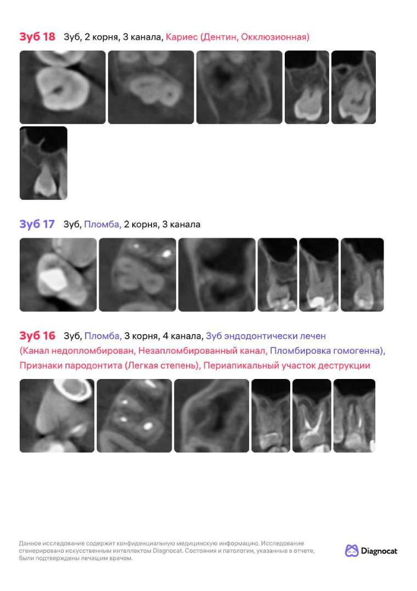

Прототип плана · данные пациента скрыты

Информационный план лечения
- Пациент
- ФИО пациента
- Ответственный врач
- ФИО врача
- Дата плана
- дд.мм.гггг
- Диагност
- ФИО врача
Текущее состояние зубочелюстной системы

Листайте схему вбок
Заключение врача. Хронический апикальный периодонтит зуба 16. Кариес зубов 17, 24, 25, 37, 36. Заболевания пародонта: пародонтит в области зубов 32, 31, 41, 42, отёк и воспаление мягких тканей. Зубы мудрости 18, 38, 48 — обязательно удаление перед ортодонтическим лечением. Нарушение прикуса, скученность зубов, деформация зубных рядов. Повышенная стираемость зубов. Зубные отложения. Несостоятельные реставрации зубов 26, 27 — требуется замена пломб. Коронки на зубах 16, 15 несостоятельны — показана замена. Требуют дообследования зубы 14, 46.
Разъяснение терминов — в разделе «Термины в плане».
Что происходит без лечения
- Кариес и дефектызубы 17, 24, 25, 26, 27, 37, 36
- Разрушение продолжается: полость растёт, стенки зуба истончаются и скалываются. При распространении к нерву кариес переходит в пульпит — потребуется лечение каналов, а восстановление станет сложнее и дороже.
- Очаги инфекции у корней (периодонтит)зуб 16
- Очаг у корня разрушает кость вокруг зуба и может обостриться болью и отёком в любой момент; без лечения зуб теряется, а хроническая инфекция влияет на соседние зубы и общее здоровье.
- Пародонтитзубы 32, 31, 41, 42
- Дёсны кровоточат, кость продолжает убывать, зубы становятся подвижными и смещаются; на поздних стадиях зубы теряются даже внешне целыми.
- Зубы мудростизубы 18, 38, 48
- Неправильно стоящие восьмёрки травмируют десну, накапливают налёт и провоцируют кариес соседних зубов.
- Несостоятельные коронкизубы 16, 15
- Под негерметичной коронкой скапливаются бактерии — развивается кариес и разрушение опорного зуба.
- Неудовлетворительная гигиена
- Быстрое прогрессирование кариеса и воспаления дёсен.
- Нарушение прикуса, скученность зубов
- Неравномерная нагрузка, стираемость, боли в суставе.
- Повышенная стираемость
- Снижение высоты прикуса, чувствительность, эстетика.
Фотографии зубов и прикуса
Четыре снимка из семи в этом плане. В вашем плане здесь будет ваш фотопротокол.

ПримерФронтальная проекция в привычном прикусе 
ПримерЗубы и прикус, рот приоткрыт 
ПримерВерхний зубной ряд 
ПримерНижний зубной ряд
Анализ компьютерной томограммы
Что дала КТ этому плану
- Очаг воспаления у корня зуба 16. Он в кости под старой коронкой — на осмотре его не увидеть. В плане: лечение каналов и новая коронка.
- Положение и корни зубов мудрости. По ним оценена сложность удаления.
- Объём кости для имплантации. От него зависят размер имплантата и то, нужна ли костная пластика. Смотреть этап имплантации


Отчёт по КТ — 10 страниц с разбором каждого зуба в нескольких срезах. Это автоматический анализ снимка, окончательный диагноз ставит врач.
Маршрут лечения
КТ отмечены этапы, которые врач спланировал по данным КТ
-
I
1–4 месяца ₽
Лечение зубов и устранение очагов инфекции (санация)
Зачем: сохраняем и восстанавливаем зубы, убираем инфекцию.
КТНашли очаг воспаления у корня зуба 16 под старой коронкой.
Что входит
- Зуб 16Лечение периодонтита · 4 канала₽
- Зуб 16Восстановление зуба после лечения каналов и временная коронка₽
- Зубы 17, 24, 25, 36, 37Лечение кариеса₽
- Зубы 26, 27Замена несостоятельных пломб₽
По показаниям — до +₽
- Зубы 14, 46Вероятно, кариес: решение после дообследованиядо +₽
-
II
после санации ₽
Удаление зубов мудрости
Зачем: зубы 18, 38, 48 удаляем перед исправлением прикуса.
КТВидно положение и корни каждого зуба — по ним оценена сложность удаления.
Что входит
- Зуб 18Удаление зуба мудрости · I степень сложности₽
- Зубы 38, 48Удаление зуба мудрости · II степень сложности₽
-
III
₽
Ортодонтическая диагностика и удаление лишнего зуба
Зачем: ортодонт составляет план исправления прикуса; сверхкомплектный зуб удаляем по его заключению.
Что входит
- Ортодонтическая диагностика и план ортодонта₽
- Зуб 43Удаление сверхкомплектного зуба₽
-
IV
2–3 года от до ₽
Исправление прикуса элайнерами или брекетами
Зачем: положение зубов определяет позиции имплантатов и форму будущих коронок.
На выбор: элайнеры или брекеты — выберете вместе с ортодонтом. Поэтому сумма указана диапазоном.
Что входит
- Элайнеры или брекеты, их установка₽
- Плановые приёмы ортодонта раз в 2 месяца₽
- Снятие аппаратуры и ретейнеры на две челюсти₽
-
V
3–6 месяцев ₽
Имплантация пример этапа
Зачем: восстанавливаем отсутствующий зуб — имплантат заменяет корень, на него ставят коронку.
КТОбъём кости, пазухи и нервные каналы — по ним подбирают размер имплантата и место установки.
Что входит
- Установка имплантата₽
- Формирователь десны₽
По показаниям — до +₽
- Костная пластика, если кости недостаточнодо +₽
-
VI
1 месяц ₽
Постоянное протезирование
Зачем: коронка на имплантат и новые коронки вместо несостоятельных.
Что входит
- Коронка на имплантате₽
- Зубы 15, 16Снятие старых коронок и циркониевые коронки₽
-
VII
после протезирования ₽
Ретенционные каппы
Зачем: удерживают новое положение зубов и защищают конструкции.
Итог по плану
- Основной маршрут лечениясрок реализации ≈ 3 года
- от до ₽
- По показаниям — только если врач подтвердит необходимость
- до +₽
Оплата постепенная — по мере выполнения этапов. Вы платите за то, что уже сделано.
План носит информационный характер: точные сроки и стоимость фиксируются в смете. Дополнительные вмешательства — только по показаниям и после согласования с вами.
Ваш следующий шаг — согласовать с координатором первый этап лечения.
Стандарты качества Денталь Профи · материалы и технологии
Хорошо и плохо сделанная работа выглядят одинаково — разница видна через год-два. Поэтому у нас есть письменные стандарты: что должно быть сделано и чем это проверяется. Ниже — по работам вашего плана.
Наш собственный стандарт. Это внутренний стандарт Денталь Профи, утверждённый в клинике и обязательный для наших врачей. Отраслевых требований такого уровня не существует — каждая клиника решает сама.
Всё под увеличением. Все терапевтические, эндодонтические, хирургические и ортопедические работы — под увеличением: бинокуляры и микроскоп, всегда с ассистентом.
- В стоимость входят врачебные манипуляции и материалы: анестезия, наложение коффердама, лечебные пасты, светоотверждаемые материалы, слепки (оттиски).
- Постоянные коронки — безметалловая керамика и диоксид циркония — устанавливаются после стабилизации положения зубов.
- Регулярная поддерживающая программа существенно влияет на срок службы результата. В неё входят профессиональная гигиена, контрольные осмотры, оценка состояния реставраций, коронок и имплантатов, диспансерное наблюдение и гарантийные осмотры. Регулярное прохождение поддерживающей программы — одно из условий действия гарантийных обязательств клиники.
Профессиональная гигиена
- Снимаем все отложения — видимые и поддесневые, на глубину до 3–5 мм; при большом объёме работу делим на два посещения
- Полируем выступающие края старых пломб: на шероховатости налёт задерживается быстрее всего
- Делаем фото с окрашиванием налёта до и после — результат видно, а не приходится верить на слово
- При необходимости проводим реминерализацию эмали
- Подбираем средства для домашнего ухода именно под ваши зубы и показываем, как ими пользоваться
Почему это важно. На воспалённых дёснах не держатся реставрации и невозможно точное планирование. Гигиена — не процедура «для свежести», а первый лечебный этап, от которого зависит результат всего плана.
Лечение зубов: пломбы и реставрации
- Работаем в изоляции — слюна и влага в зону лечения не попадают
- Убираем весь поражённый дентин под оптикой и с индикатором кариеса, а не «на глаз»
- Никаких щелей и нависающих краёв: прилегание проверяем визуально и на снимке
- Плотный контакт с соседним зубом — зубная нить проходит со щелчком, пища не застревает
- Проверяем смыкание: пломба не мешает ни при сжатии зубов, ни при движении челюсти
- Полируем до блеска и воспроизводим природную анатомию — реставрация не выделяется на фоне своих зубов
Почему это важно. Повторный кариес почти всегда начинается по краю пломбы и в межзубном промежутке. Разница между «поставили пломбу» и «поставили герметично, с правильным контактом» — это годы службы зуба.
Лечение корневых каналов
- Каналы лечим под микроскопом и в полной изоляции — инфекция снаружи внутрь зуба не попадает
- Перед началом убираем весь кариес и старые пломбы, чтобы не занести инфекцию в канал
- Проходим каждый канал до верхушки корня; длину контролируем прибором и снимком
- Пломбируем плотно, без пустот — герметичность подтверждаем рентгеном
- Между посещениями зуб закрыт герметично: канал не инфицируется повторно
- Через 6–12 месяцев приглашаем на контрольный снимок — убеждаемся, что кость у верхушки зажила
Почему это важно. Перелечивание канала всегда сложнее, дороже и менее предсказуемо, чем первое лечение, а иногда заканчивается потерей зуба. Качество этой работы видно только на снимке и проявляется через годы.
Удаление зуба
- Полное обезболивание: во время удаления боли быть не должно
- Удаляем зуб и все его фрагменты, лунку очищаем от воспалённых тканей
- Добиваемся правильного сгустка в лунке и ушиваем рану — заживление идёт спокойнее
- Делаем контрольный снимок: в лунке ничего не осталось
- Даём письменные рекомендации на первые дни и остаёмся на связи
Почему это важно. Оставленный фрагмент корня или невычищенное воспаление — это боль, отёк и потеря кости, которую потом приходится восстанавливать отдельной операцией перед имплантацией.
Коронки и протезы на имплантатах
- Точность посадки на имплантат проверяем рентгеном: конструкция садится без зазора и без напряжения
- Промежуточная часть плотно прилегает к десне — под протезом не скапливается налёт
- Смыкание настраиваем так, чтобы имплантаты не перегружались
- При цементной фиксации полностью убираем излишки цемента
- Шахту винта закрываем герметично и незаметно
Почему это важно. Имплантат не чувствует перегрузку — у него нет связки, как у своего зуба. Поэтому точность посадки и настройка смыкания определяют, прослужит конструкция пять лет или двадцать.
Коронки, виниры и вкладки
- Край коронки плотно прилегает к зубу — проверяем визуально и на снимке
- Плотный контакт с соседними зубами: зубная нить проходит со щелчком
- Настраиваем смыкание — без перегрузки и без помех при движении челюсти
- Фиксируем в сухом поле и полностью убираем излишки цемента
- Форма и цвет — под ваши зубы: конструкция не выделяется
Почему это важно. Остатки цемента под десной вызывают воспаление и потерю кости, а неточный край — кариес под коронкой, который не виден до появления боли. Эти детали и отделяют работу на десять лет от работы на пару лет.
Ортодонтическое лечение
- Смыкание выставляем по первому классу; центр и эстетика лица — обязательная часть результата
- Полноценные контакты на каждом зубе: жевание равномерное, передние зубы не перегружены
- Корни зубов ставим безопасно в кости — это профилактика рецессий десны
- Контрольная КТ в начале, на этапах, в конце лечения и через год после него
- После снятия аппаратуры зубы полностью очищаем и полируем, ретейнеры изготавливаем в кратчайший срок
Почему это важно. Ровные зубы — не результат, а его видимая часть. Результат — стабильное смыкание, в котором зубы не стираются и не расшатываются, и которое удерживается ретейнерами.
Стандарты качества Денталь Профи — собственная методика клиники, редакция 2026 года.
Термины в плане
- Зуб мудрости
- восьмой зуб; при неправильном положении или невозможности ухода рекомендуется удаление
- Имплантат
- искусственный корень зуба: его устанавливают в кость, а сверху фиксируют коронку
- Кариес
- постепенное разрушение твёрдых тканей зуба; без лечения дефект растёт, а при распространении к нерву требуется лечение каналов
- Коронка
- конструкция, полностью закрывающая зуб и возвращающая ему форму и прочность
- Костная пластика
- наращивание кости, если её объёма недостаточно для имплантата
- Пародонтит
- воспаление тканей вокруг зуба (десны и кости): убывает кость, зубы становятся подвижными
- Периодонтит
- воспалительный очаг у корня зуба
- Ретенционная каппа
- съёмная каппа, которая удерживает положение зубов и новых конструкций
- Санация
- лечение всех больных зубов и устранение очагов инфекции до начала основных этапов
- Сверхкомплектный зуб
- лишний зуб сверх обычного количества
- Формирователь десны
- деталь на имплантате, вокруг которой десна заживает в правильной форме перед установкой коронки
- Элайнеры
- прозрачные съёмные каппы, которые поэтапно перемещают зубы